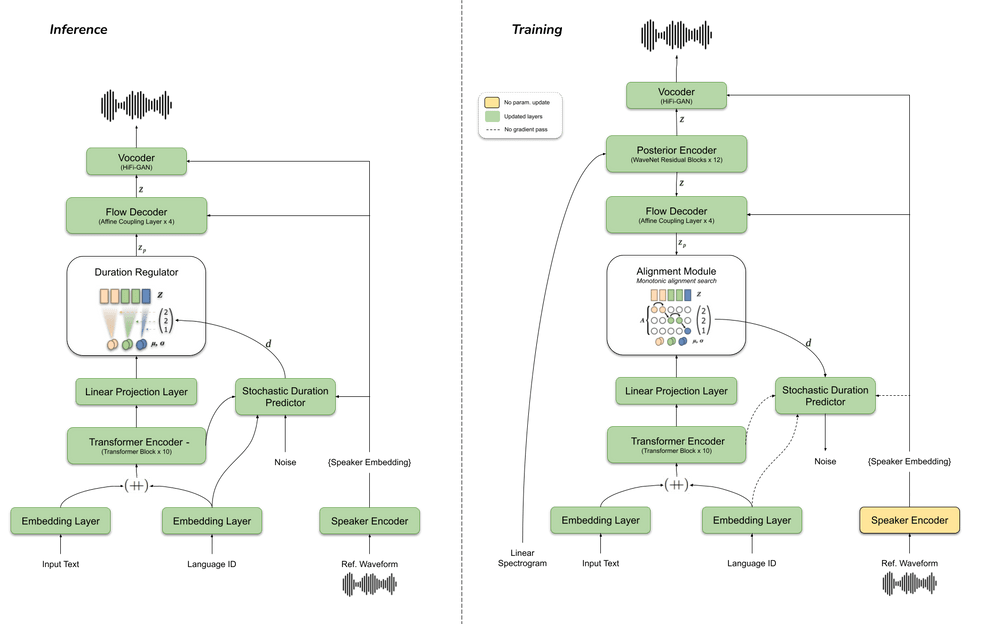

- VITS 기반
- 음소 대신 raw text 사용
- multi-language에서 좋음(음소 별로 소리를 예측할 수 없는 문자에 대해 좋은 성능)
- ENCODER(text -> embedding): transformer 기반 text encoder
- multi-language를 위해 각 input character에 4차원 임베딩(trainable) concat
- block 개수 10으로 늘림
- hidden channel rotn 196으로 늘림
- DECODER(embedding -> mel): stack of 4 affine coupling layers
- 각 layer는 4 WaveNet residual blocks
- VITS 모델처럼
- 효율적 핟습을 위해 z에서 일정 길이만큼 랜덤하게 뽑음
- 이때 flow-based decoder가 z와 스피커 임베딩을 컨디셔닝 함, Pz distribution에 의해서
- Pz와 텍스트 인코더의 출력을 맞추기 위해서 Monotonic Alignment Search (MAS) 사용
- MAS: 텍스트 임베딩과 음성 스펙트로그램의 임베딩을 동일한 공간으로 매핑한 후 Dynamic Time Warping(DTW) 알고리즘을 활용하여 두 sequence 간의 배열 정보와 거리를 구하는 알고리즘
- MAS는 training 중에만
- 인퍼런스에서는
- 대신 텍스트 인코더가 Pz 분포를 예측, 랜덤 노이즈가 확률적 duration predictor의 인버스를 거쳐서 duration 샘플링 -> 정수로 변환
- 이러면 zp가 Pz에서 샘플링 됨
- 이 zp와 스피커 임베딩을 Flow-based decoder가 input으로 받음
- 이를 통해 z를 만들고, vocoder generator에 넣어서 음성 생성
- VOCODER(mel -> audio): HiFI-GAN
- variational autoencoder(VAE), end2end train 위해
- 이를 위해 Posterior(x -> z) Encoder 사용
- 학습에만 사용됨
- 16 non-casual WaveNet residual blocks
- input으로 linear spectrogram, 스피커 임베딩 -> output으로 latent variable z 예측
- 이 latent variable은 vocoder와 flow-based decoder의 input
- 그래서 모델이 즉각적으로 학습할 수 있음
- vocoder와 TTS 모델을 따로 학습하는 2-stage 방식에서 좋은 성능
- 학습 중에는 linear s
- 다양한 리듬으로 말하게 하기 위해서 확률적 duration predictor 사용
- input으로 스피커 임베딩, 랭귀지 임베딩, MAS를 거친 duration
- flow-based decoder의 모든 affine coupling layers, posterior encoder, 외부 화자 인코딩의 보코더를 모두 컨디셔닝
- coupling layer의 residual block은 global conditioning(시점에 따라 변하지 않는 조건)
- 외부 화자 임베딩과 text encoder output, decoder output을 다 더해서 duration predictor, vocoder에 전달
- 차원을 맞추기 위해서는 선형 projection layer 사용
- LOSS: Speaker Consistency Loss (SCL)
- 기학습 스피키 언코더로 원본과 출력물의 임베딩 벡터를 뽑고, 둘의 코사인 유사도를 높이는 쪽으로 학습
- n으로 나누는데 n은 배치 사이즈